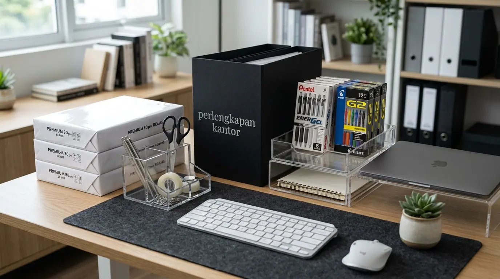

Apa Itu Perlengkapan WFH Esensial dan Mengapa Karyawan Membutuhkannya?
Perlengkapan WFH esensial adalah rangkaian peralatan kerja fisik yang dirancang khusus untuk menunjang aktivitas profesional saat bekerja dari rumah, seperti kursi ergonomis, meja adjustable, dudukan laptop, serta alat penata dokumen harian. Berdasarkan survei Indonesia Remote Work Productivity Index 2025-2026, sebanyak 84% profesional yang melengkapi ruang kerja rumah mereka dengan sarana ergonomis mencatatkan peningkatan output pekerjaan hingga 32,4% dibanding pekerja yang menggunakan furnitur seadanya. Laporan Occupational Health & Ergonomics Study 2025 juga mencatat bahwa penggunaan peralatan kerja yang berstandar medis menekan klaim kelelahan fisik dan nyeri punggung hingga 47% dalam kurun waktu satu tahun.
Memiliki sarana kerja rumah yang memadai merupakan syarat mutlak bagi tercapainya fokus dan kenyamanan kerja jangka panjang. Ruang kerja rumah yang berantakan tanpa ditopang peralatan yang tepat dapat menurunkan semangat kerja serta memicu kejenuhan harian. Oleh karena itu, memesan paket sarana kerja rumah melalui penyedia Perlengkapan Kantor tepercaya menjadi solusi praktis bagi korporat yang ingin memfasilitasi kebutuhan kerja harian para stafnya.
Berikut adalah tabel rincian item utama yang wajib ada dalam daftar perlengkapan kerja rumah:
| Kategori Peralatan | Nama Produk Utama | Fungsi Utama | Dampak Terhadap Produktivitas |
|---|---|---|---|
| Penopang Ergonomis | Kursi Kerja Adjustable & Stand Laptop | Memperbaiki postur tubuh & leher | Mencegah nyeri punggung & leher |
| Pencahayaan & Audio | Lampu Meja LED & Headset Noise Canceling | Mengoptimalkan pencahayaan & suara | Meningkatkan fokus saat rapat online |
| Pengatur Kerapian | Cable Tray & Organiser Meja Acrylic | Merapikan kabel & peralatan tulis | Mengurangi kebingungan visual meja |
| Manajemen Berkas | Desk File Trays & Binder Kearsipan | Menyimpan berkas fisik harian | Mempercepat pencarian dokumen |
- Mulai dengan kursi ergonomis dan stand laptop — ini adalah investasi paling dasar.
- Tambahkan lampu meja LED untuk mengurangi kelelahan mata.
- Gunakan cable tray untuk menjaga meja tetap rapi.
Mengapa Aspek Ergonomi Sangat Menentukan Kesehatan Postur Kerja di Rumah?
Aspek ergonomi sangat menentukan kesehatan postur kerja di rumah karena furnitur berstandar ergonomis menyesuaikan dengan lekuk alami tubuh manusia, sehingga mencegah timbulnya ketegangan otot pada area leher, bahu, dan pinggang. Bekerja di atas sofa atau meja makan dalam durasi panjang terbukti memicu gangguan musculoskeletal disorder yang dapat merusak produktivitas harian.
Kelebihan utama penerapan sarana kerja ergonomis meliputi:
- Menjaga Posisi Tulang Belakang: Penopang pinggang (lumbar support) pada kursi kerja memastikan posisi duduk tetap tegak alami.
- Mengurangi Ketegangan Otot Leher: Dudukan laptop menyejajarkan posisi layar dengan sudut pandang mata tanpa perlu membungkuk.
- Meningkatkan Sirkulasi Darah: Pijakan kaki (footrest) menjaga aliran darah di area kaki tetap lancar sepanjang hari kerja.
- Menjaga Efisiensi Kerja: Tubuh yang bebas rasa sakit membuat karyawan mampu berkonsentrasi penuh pada target harian.
- Pekerja remote dengan peralatan ergonomis memiliki produktivitas 32% lebih tinggi.
- Penggunaan stand laptop dapat mengurangi ketegangan leher hingga 40%.
- Footrest membantu menjaga sirkulasi darah dan mencegah kaki bengkak.
Bagaimana Cara Menata Meja Kerja Rumah Agar Selalu Rapi dan Efisien?
Cara menata meja kerja rumah agar selalu rapi dan efisien adalah dengan menerapkan sistem zonasi meja, merapikan seluruh kabel komputer menggunakan saluran pengikat (cable organizer), serta menaruh berkas aktif pada nampan dokumen vertikal. Barang-barang yang tidak berkaitan dengan tugas hari itu sebaiknya disimpan di dalam laci atau rak arsip terpisah.
Langkah taktis yang dapat diterapkan di ruang kerja rumah:
- Gunakan Pen Organizer Terintegrasi: Menampung seluruh alat tulis dan perlengkapan kecil dalam satu tempat yang mudah dijangkau.
- Pasang Pengikat Kabel Tersembunyi: Menyembunyikan kabel daya komputer agar tidak melilit di atas permukaan meja.
- Sediakan Tempat Arsip Harian: Memanfaatkan binder atau nampan dokumen untuk menampung kertas agar tidak berhamburan.
- Terapkan Aturan Meja Bersih di Akhir Hari: Merapikan seluruh peralatan begitu jam kerja selesai untuk menyambut hari berikutnya dengan segar.
Lengkapi seluruh kebutuhan sarana kerja rumah perusahaan Anda dengan memesan langsung dari distributor resmi Perlengkapan Kantor milik kami.
Faktor Apa Saja yang Wajib Dipersiapkan Perusahaan untuk Fasilitas Kerja Remote Staf?

Distributor Perlengkapan Kantor menyediakan berbagai perlengkapan WFH esensial untuk kebutuhan karyawan remote.
Faktor yang wajib dipersiapkan perusahaan untuk fasilitas kerja remote staf meliputi standar kelayakan ergonomis barang, kemudahan distribusi pengiriman ke rumah karyawan, ketersediaan garansi penggantian, serta fleksibilitas harga grosir bagi pengadaan skala besar. Perusahaan yang memfasilitasi peralatan kerja rumah terbukti memiliki tingkat retensi karyawan yang jauh lebih tinggi.
Kerja sama pengadaan bersama distributor Perlengkapan Kantor membantu manajemen dalam mengunci anggaran fasilitas kerja agar tetap efisien tanpa mengorbankan mutu barang.
Sempurnakan fasilitas kerja rumah karyawan Anda sekarang juga dengan memesan paket peralatan dari penyedia Perlengkapan Kantor tepercaya yang menawarkan produk bergaransi resmi.
Apa Saja Kesalahan dalam Memilih Sarana Kerja Rumah?
Kesalahan dalam memilih sarana kerja rumah mencakup tergiur harga murah tanpa memperhatikan ketahanan rangka, membeli kursi tanpa fitur pengaturan tinggi, serta mengabaikan pentingnya lampu meja tambahan. Bekerja hanya mengandalkan lampu ruangan utama sering kali membuat mata cepat lelah akibat kurangnya pencahayaan pada area meja.
Selain itu, mengabaikan pentingnya pengatur kabel membuat meja terlihat berantakan dan rawan memicu kerusakan alat elektronik. Membeli paket kerja rumah dari distributor Perlengkapan Kantor memastikan Anda mendapatkan set produk yang presisi dan tahan lama.
- ❌ Membeli kursi tanpa fitur pengaturan ketinggian lumbar.
- ❌ Mengabaikan stand laptop — layar laptop terlalu rendah merusak leher.
- ❌ Tidak menggunakan lampu meja tambahan — mata cepat lelah.
- ❌ Membiarkan kabel berserakan tanpa cable organizer.
Pertanyaan Populer Seputar Perlengkapan WFH Esensial
Kesimpulan Praktis
Menyediakan perlengkapan WFH esensial yang berkualitas merupakan langkah investasi cerdas bagi perusahaan untuk menjaga kesehatan, kenyamanan, dan produktivitas karyawan yang bekerja secara remote. Didukung oleh ketersediaan produk original dan layanan pengiriman terpercaya dari Perlengkapan Kantor, seluruh kebutuhan fasilitas kerja rumah Anda dapat terpenuhi dengan sempurna.

Penulis: Ardhana Prasasta
Spesialis konten & konsultan furnitur tata ruang kantor di Perlengkapan Kantor. Berpengalaman dalam memberikan panduan solusi ergonomis, efisiensi ruang kerja, dan pengadaan perlengkapan kantor korporat.